2. Open the Epsilon perspective: (Window -> Open Perspective -> Other -> Epsilon)
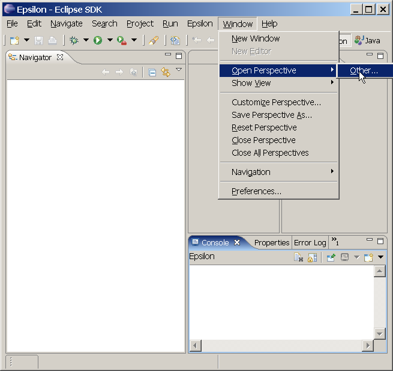
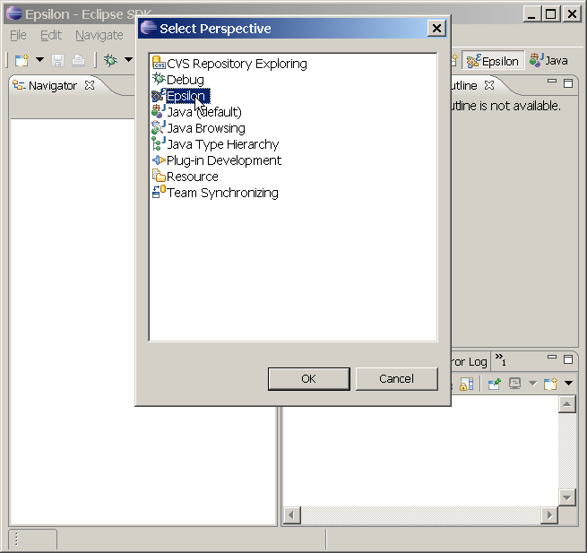
3. Create a new Project (
File -> New -> Project ->Simple)4. Choose
Project from the list5. Click
Next
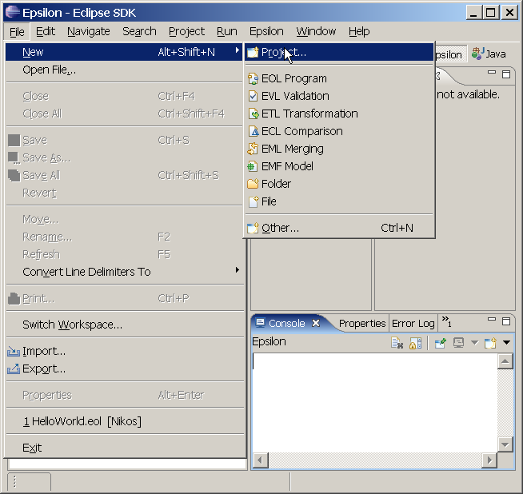
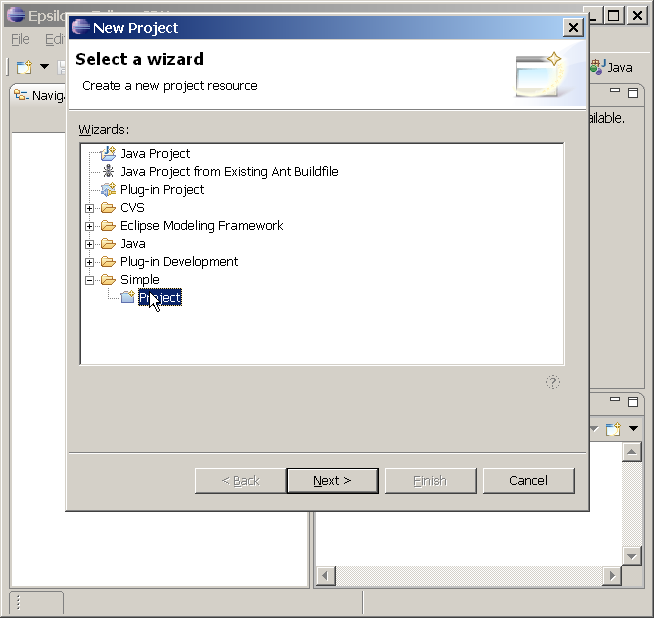
6. Enter a project name into the Project name field, for example,
HelloWorld.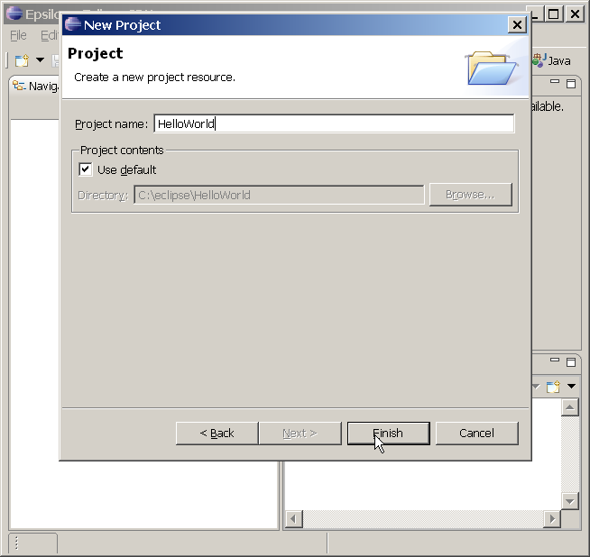
7. Click
Finish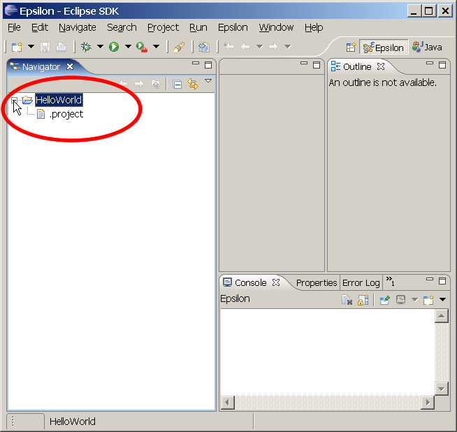
8. Create a new EOL program (
File -> New -> EOL Program)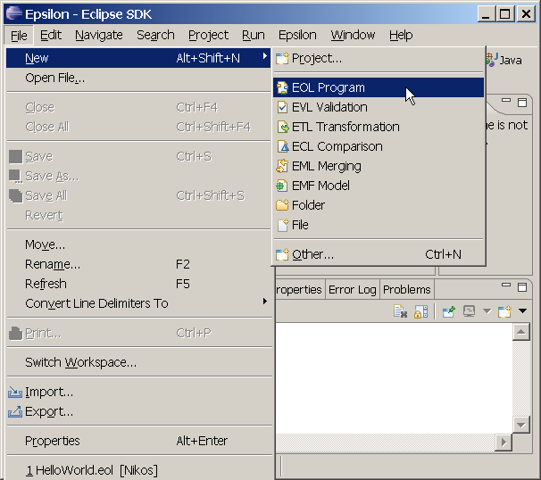
9. Enter
helloWorld.eol in the File name field
10. Click
Finish11.In the EOL editor that opends enter the following line:
'Hello World'.println();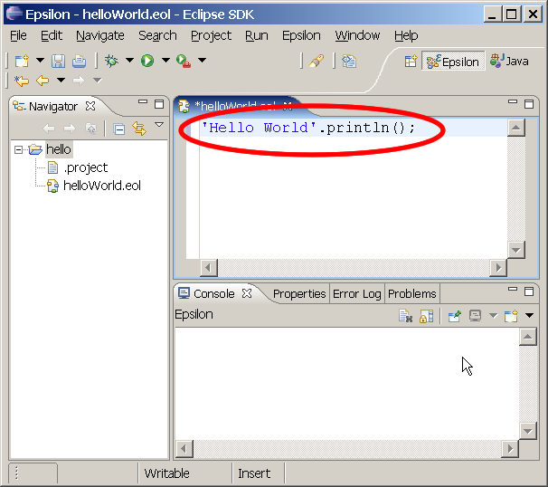
12. Save using
Ctrl+S.
13. Click the
Run button in the toolbar (looks like a green circle with a white arrow inside)
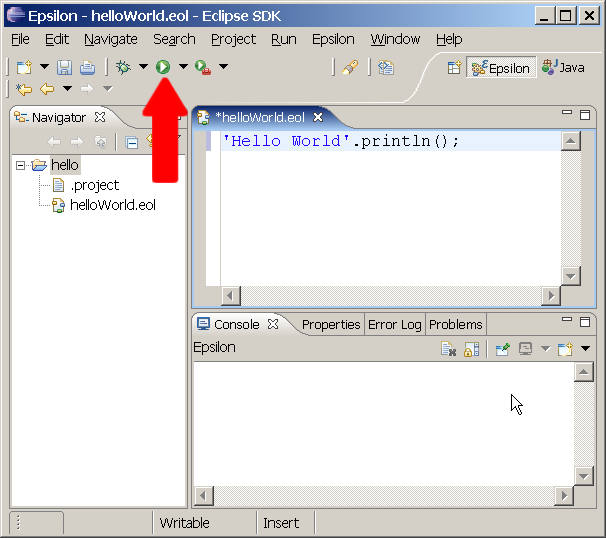
14. You will be prompted to create a Launch configuration. Select
EOL Program and click New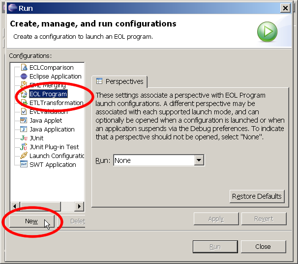
15. Click
Run to run the HelloWorld program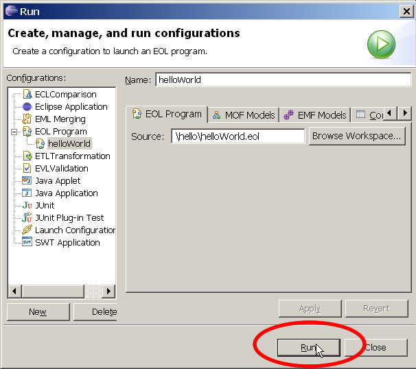
16. The console will open and display
Hello World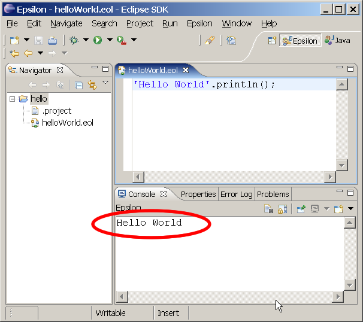